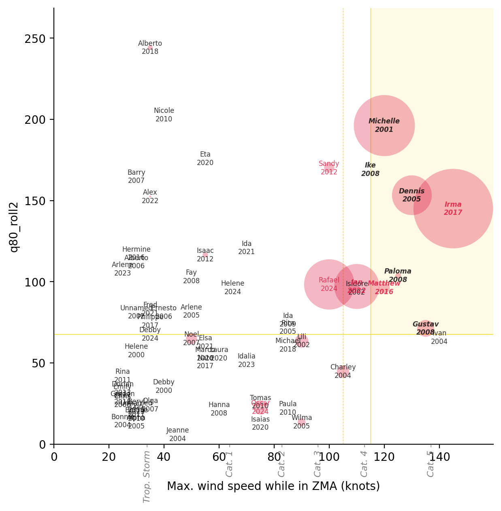
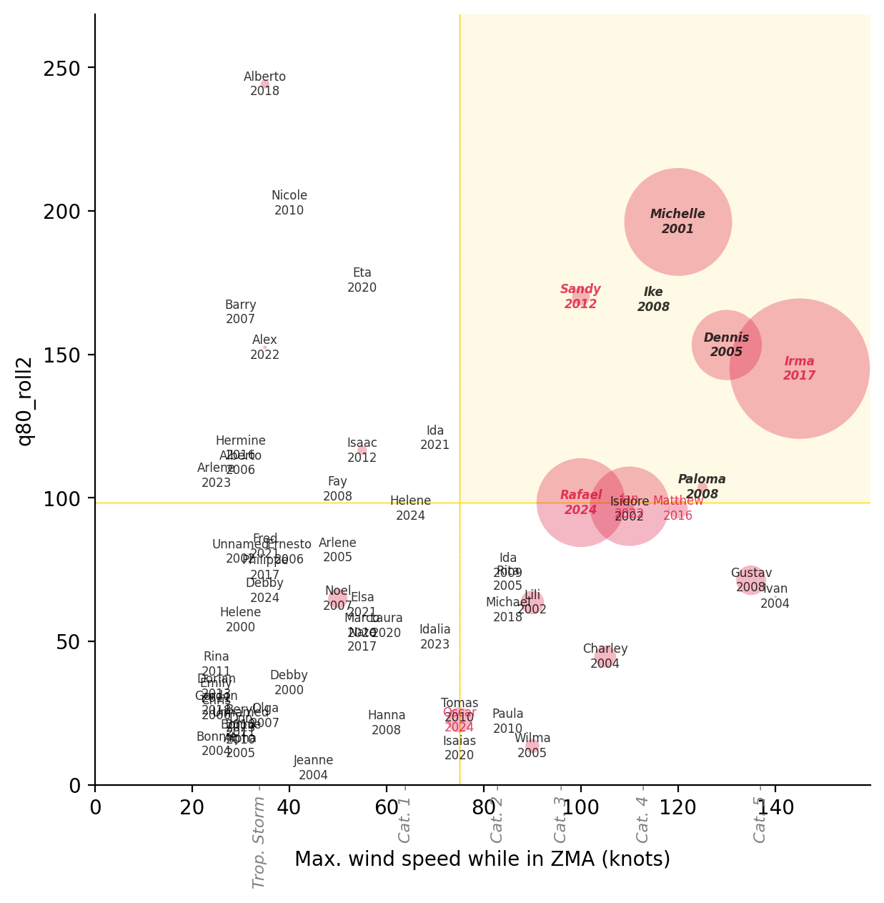
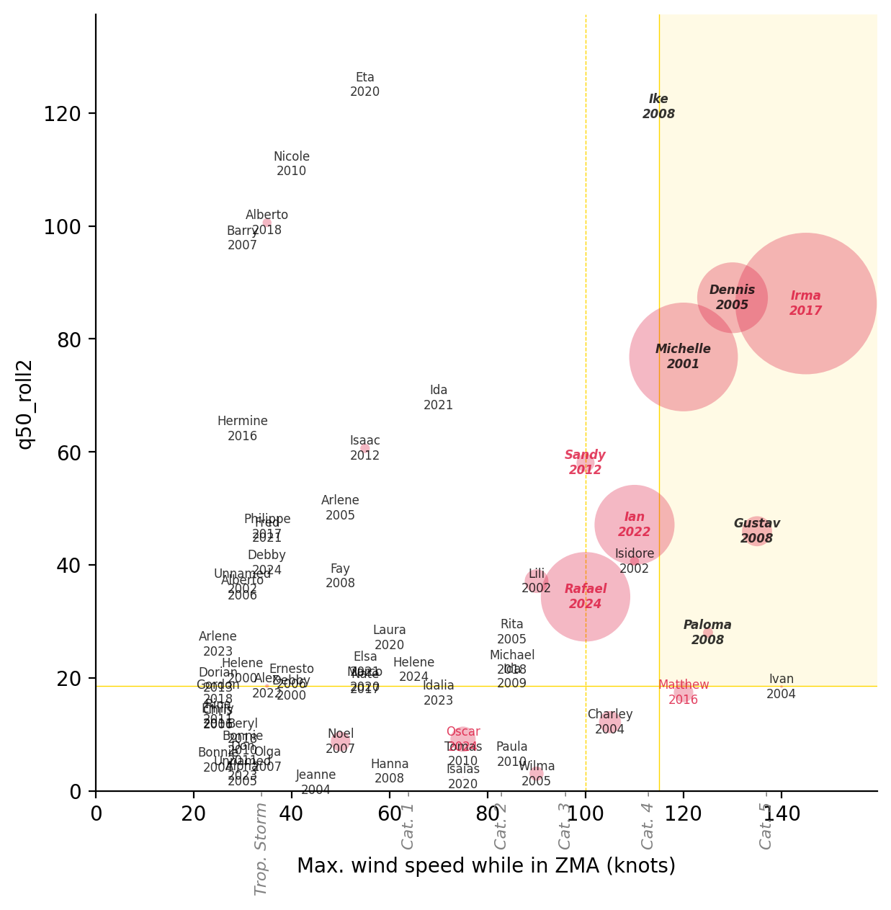
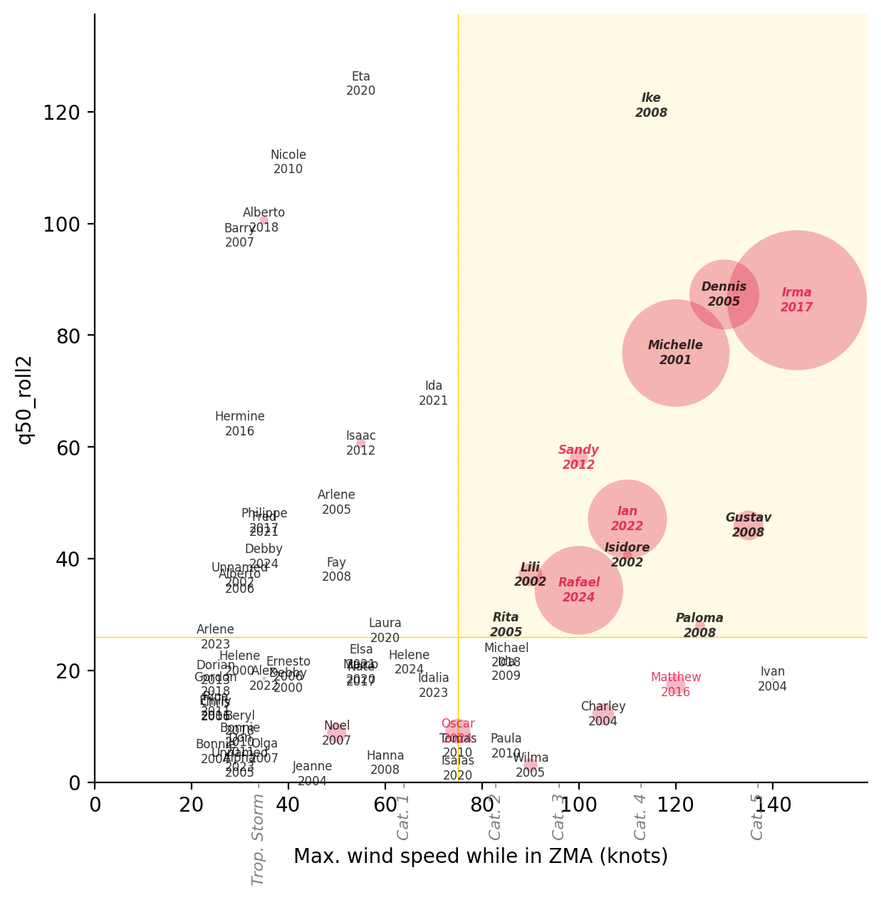

Code
%load_ext jupyter_black
%load_ext autoreload
%autoreload 2%load_ext jupyter_black
%load_ext autoreload
%autoreload 2import ocha_stratus as stratus
import matplotlib.pyplot as plt
import matplotlib.patches as mpatches
from matplotlib.ticker import FuncFormatter
from src.constants import *blob_name = (
f"{PROJECT_PREFIX}/processed/storm_stats/stats_with_targets.parquet"
)
df_stats = stratus.load_parquet_from_blob(blob_name)blob_name = f"{PROJECT_PREFIX}/processed/trigger_metrics_ibtracs_imerg.parquet"
df_results = stratus.load_parquet_from_blob(blob_name)df_results| rain_col | rain_thresh | wind_speed_max | wind_speed_max_landfall | target_sum | impact_sum | target_with_cerf_sum | cerf_sum | n_years | n_storms | rain_agg | rain_q | rain_window | |
|---|---|---|---|---|---|---|---|---|---|---|---|---|---|
| 0 | q50_total | 18.190000 | 40.0 | NaN | 6 | 27069337 | 9 | 7 | 18 | 31 | quantile | 50 | total |
| 1 | q50_total | 18.190000 | 40.0 | 115.0 | 6 | 27069337 | 9 | 7 | 18 | 31 | quantile | 50 | total |
| 2 | q50_total | 18.190000 | 40.0 | 75.0 | 6 | 27069337 | 9 | 7 | 18 | 31 | quantile | 50 | total |
| 3 | q50_total | 18.190000 | 40.0 | 90.0 | 6 | 27069337 | 9 | 7 | 18 | 31 | quantile | 50 | total |
| 4 | q50_total | 18.190000 | 40.0 | 25.0 | 6 | 27069337 | 9 | 7 | 18 | 35 | quantile | 50 | total |
| ... | ... | ... | ... | ... | ... | ... | ... | ... | ... | ... | ... | ... | ... |
| 752233 | q99_roll3_mean_abv | 287.727478 | 65.0 | 100.0 | 5 | 23164562 | 8 | 6 | 12 | 15 | mean_abv | 99 | roll3 |
| 752234 | q99_roll3_mean_abv | 287.727478 | 65.0 | 130.0 | 5 | 23164562 | 8 | 6 | 12 | 15 | mean_abv | 99 | roll3 |
| 752235 | q99_roll3_mean_abv | 287.727478 | 65.0 | 30.0 | 5 | 23210058 | 8 | 6 | 13 | 18 | mean_abv | 99 | roll3 |
| 752236 | q99_roll3_mean_abv | 287.727478 | 65.0 | 70.0 | 5 | 23164562 | 8 | 6 | 12 | 15 | mean_abv | 99 | roll3 |
| 752237 | q99_roll3_mean_abv | 287.727478 | 65.0 | 110.0 | 5 | 23164562 | 8 | 6 | 12 | 15 | mean_abv | 99 | roll3 |
752238 rows × 13 columns
def get_optimal_triggers(optimize_col: str, years_triggered: int):
df_results_rp = df_results[df_results["n_years"] == years_triggered]
df_results_top_single_col = df_results_rp[
df_results_rp[optimize_col] == df_results_rp[optimize_col].max()
]
df_results_top_duplicates = df_results_top_single_col[
df_results_top_single_col["impact_sum"]
== df_results_top_single_col["impact_sum"].max()
]
df_results_top = (
df_results_top_duplicates.sort_values("rain_thresh")
.drop_duplicates(
subset=["wind_speed_max", "wind_speed_max_landfall", "rain_col"]
)
.sort_values("wind_speed_max")
.drop_duplicates(
subset=["rain_thresh", "wind_speed_max_landfall", "rain_col"]
)
.sort_values("wind_speed_max_landfall")
.drop_duplicates(subset=["rain_thresh", "wind_speed_max", "rain_col"])
)
return df_results_topget_optimal_triggers("target_sum", 6)| rain_col | rain_thresh | wind_speed_max | wind_speed_max_landfall | target_sum | impact_sum | target_with_cerf_sum | cerf_sum | n_years | n_storms | rain_agg | rain_q | rain_window | |
|---|---|---|---|---|---|---|---|---|---|---|---|---|---|
| 689 | q50_total | 26.412498 | 115.0 | 105.0 | 5 | 22343481 | 6 | 4 | 6 | 8 | quantile | 50 | total |
get_optimal_triggers("target_with_cerf_sum", 6)| rain_col | rain_thresh | wind_speed_max | wind_speed_max_landfall | target_sum | impact_sum | target_with_cerf_sum | cerf_sum | n_years | n_storms | rain_agg | rain_q | rain_window | |
|---|---|---|---|---|---|---|---|---|---|---|---|---|---|
| 148901 | q50_roll3_mean_abv | 79.962158 | 115.0 | 105.0 | 5 | 22289476 | 7 | 5 | 6 | 8 | mean_abv | 50 | roll3 |
| 44987 | q50_total_mean_abv | 82.303337 | 115.0 | 105.0 | 5 | 22289476 | 7 | 5 | 6 | 8 | mean_abv | 50 | total |
| 256955 | q80_roll3 | 73.388992 | 115.0 | 105.0 | 5 | 22289476 | 7 | 5 | 6 | 8 | quantile | 80 | roll3 |
| 81005 | q50_roll2_mean_abv | 70.131157 | 115.0 | 105.0 | 5 | 22289476 | 7 | 5 | 6 | 8 | mean_abv | 50 | roll2 |
| 225077 | q80_roll2 | 67.569000 | 115.0 | 105.0 | 5 | 22289476 | 7 | 5 | 6 | 8 | quantile | 80 | roll2 |
| 167945 | q80_total | 77.296997 | 115.0 | 105.0 | 5 | 22289476 | 7 | 5 | 6 | 8 | quantile | 80 | total |
| 116609 | q50_roll3 | 20.857498 | 115.0 | 105.0 | 5 | 22289476 | 7 | 5 | 6 | 8 | quantile | 50 | roll3 |
| 16433 | q50_total | 22.917500 | 115.0 | 110.0 | 5 | 22289476 | 7 | 5 | 6 | 8 | quantile | 50 | total |
get_optimal_triggers("cerf_sum", 6)| rain_col | rain_thresh | wind_speed_max | wind_speed_max_landfall | target_sum | impact_sum | target_with_cerf_sum | cerf_sum | n_years | n_storms | rain_agg | rain_q | rain_window | |
|---|---|---|---|---|---|---|---|---|---|---|---|---|---|
| 148901 | q50_roll3_mean_abv | 79.962158 | 115.0 | 105.0 | 5 | 22289476 | 7 | 5 | 6 | 8 | mean_abv | 50 | roll3 |
| 44987 | q50_total_mean_abv | 82.303337 | 115.0 | 105.0 | 5 | 22289476 | 7 | 5 | 6 | 8 | mean_abv | 50 | total |
| 256955 | q80_roll3 | 73.388992 | 115.0 | 105.0 | 5 | 22289476 | 7 | 5 | 6 | 8 | quantile | 80 | roll3 |
| 81005 | q50_roll2_mean_abv | 70.131157 | 115.0 | 105.0 | 5 | 22289476 | 7 | 5 | 6 | 8 | mean_abv | 50 | roll2 |
| 225077 | q80_roll2 | 67.569000 | 115.0 | 105.0 | 5 | 22289476 | 7 | 5 | 6 | 8 | quantile | 80 | roll2 |
| 167945 | q80_total | 77.296997 | 115.0 | 105.0 | 5 | 22289476 | 7 | 5 | 6 | 8 | quantile | 80 | total |
| 116609 | q50_roll3 | 20.857498 | 115.0 | 105.0 | 5 | 22289476 | 7 | 5 | 6 | 8 | quantile | 50 | roll3 |
| 16433 | q50_total | 22.917500 | 115.0 | 110.0 | 5 | 22289476 | 7 | 5 | 6 | 8 | quantile | 50 | total |
get_optimal_triggers("target_sum", 7)| rain_col | rain_thresh | wind_speed_max | wind_speed_max_landfall | target_sum | impact_sum | target_with_cerf_sum | cerf_sum | n_years | n_storms | rain_agg | rain_q | rain_window | |
|---|---|---|---|---|---|---|---|---|---|---|---|---|---|
| 72319 | q50_roll2 | 18.574999 | 115.0 | 100.0 | 6 | 26262081 | 8 | 6 | 7 | 9 | quantile | 50 | roll2 |
| 119101 | q50_roll3 | 21.314999 | 115.0 | 100.0 | 6 | 26262081 | 8 | 6 | 7 | 9 | quantile | 50 | roll3 |
| 10633 | q50_total | 27.847499 | 115.0 | 100.0 | 6 | 26262081 | 8 | 6 | 7 | 9 | quantile | 50 | total |
get_optimal_triggers("target_with_cerf_sum", 7)| rain_col | rain_thresh | wind_speed_max | wind_speed_max_landfall | target_sum | impact_sum | target_with_cerf_sum | cerf_sum | n_years | n_storms | rain_agg | rain_q | rain_window | |
|---|---|---|---|---|---|---|---|---|---|---|---|---|---|
| 72319 | q50_roll2 | 18.574999 | 115.0 | 100.0 | 6 | 26262081 | 8 | 6 | 7 | 9 | quantile | 50 | roll2 |
| 119101 | q50_roll3 | 21.314999 | 115.0 | 100.0 | 6 | 26262081 | 8 | 6 | 7 | 9 | quantile | 50 | roll3 |
| 10633 | q50_total | 27.847499 | 115.0 | 100.0 | 6 | 26262081 | 8 | 6 | 7 | 9 | quantile | 50 | total |
get_optimal_triggers("cerf_sum", 7)| rain_col | rain_thresh | wind_speed_max | wind_speed_max_landfall | target_sum | impact_sum | target_with_cerf_sum | cerf_sum | n_years | n_storms | rain_agg | rain_q | rain_window | |
|---|---|---|---|---|---|---|---|---|---|---|---|---|---|
| 72319 | q50_roll2 | 18.574999 | 115.0 | 100.0 | 6 | 26262081 | 8 | 6 | 7 | 9 | quantile | 50 | roll2 |
| 119101 | q50_roll3 | 21.314999 | 115.0 | 100.0 | 6 | 26262081 | 8 | 6 | 7 | 9 | quantile | 50 | roll3 |
| 10633 | q50_total | 27.847499 | 115.0 | 100.0 | 6 | 26262081 | 8 | 6 | 7 | 9 | quantile | 50 | total |
get_optimal_triggers("target_sum", 8)| rain_col | rain_thresh | wind_speed_max | wind_speed_max_landfall | target_sum | impact_sum | target_with_cerf_sum | cerf_sum | n_years | n_storms | rain_agg | rain_q | rain_window | |
|---|---|---|---|---|---|---|---|---|---|---|---|---|---|
| 68672 | q50_roll2 | 17.484999 | 145.0 | 75.0 | 6 | 26586051 | 8 | 6 | 8 | 11 | quantile | 50 | roll2 |
| 118892 | q50_roll3 | 21.314999 | 90.0 | 75.0 | 6 | 26586051 | 8 | 6 | 8 | 11 | quantile | 50 | roll3 |
| 72110 | q50_roll2 | 18.574999 | 90.0 | 75.0 | 6 | 26586051 | 8 | 6 | 8 | 11 | quantile | 50 | roll2 |
| 10424 | q50_total | 27.847499 | 90.0 | 75.0 | 6 | 26586051 | 8 | 6 | 8 | 11 | quantile | 50 | total |
| 73172 | q50_roll2 | 25.957497 | 75.0 | 75.0 | 6 | 26586051 | 8 | 6 | 8 | 12 | quantile | 50 | roll2 |
| 111260 | q50_roll3 | 31.377502 | 75.0 | 75.0 | 6 | 26586051 | 8 | 6 | 8 | 12 | quantile | 50 | roll3 |
get_optimal_triggers("target_with_cerf_sum", 8)| rain_col | rain_thresh | wind_speed_max | wind_speed_max_landfall | target_sum | impact_sum | target_with_cerf_sum | cerf_sum | n_years | n_storms | rain_agg | rain_q | rain_window | |
|---|---|---|---|---|---|---|---|---|---|---|---|---|---|
| 44571 | q50_total_mean_abv | 91.037247 | 115.0 | 90.0 | 6 | 26452081 | 9 | 7 | 8 | 10 | mean_abv | 50 | total |
| 270201 | q80_roll3 | 76.439003 | 115.0 | 90.0 | 6 | 26452081 | 9 | 7 | 8 | 10 | quantile | 80 | roll3 |
| 148899 | q50_roll3_mean_abv | 79.962158 | 115.0 | 90.0 | 6 | 26452081 | 9 | 7 | 8 | 10 | mean_abv | 50 | roll3 |
| 161733 | q80_total | 88.023996 | 115.0 | 90.0 | 6 | 26452081 | 9 | 7 | 8 | 10 | quantile | 80 | total |
| 225075 | q80_roll2 | 67.569000 | 115.0 | 90.0 | 6 | 26452081 | 9 | 7 | 8 | 10 | quantile | 80 | roll2 |
| 81003 | q50_roll2_mean_abv | 70.131157 | 115.0 | 90.0 | 6 | 26452081 | 9 | 7 | 8 | 10 | mean_abv | 50 | roll2 |
| 209433 | q80_roll2 | 64.883003 | 145.0 | 90.0 | 6 | 26452081 | 9 | 7 | 8 | 10 | quantile | 80 | roll2 |
| 129945 | q50_roll3_mean_abv | 77.877907 | 145.0 | 90.0 | 6 | 26452081 | 9 | 7 | 8 | 10 | mean_abv | 50 | roll3 |
| 79437 | q50_roll2_mean_abv | 69.980583 | 145.0 | 90.0 | 6 | 26452081 | 9 | 7 | 8 | 10 | mean_abv | 50 | roll2 |
| 167953 | q80_total | 77.296997 | 115.0 | 100.0 | 6 | 26452081 | 9 | 7 | 8 | 10 | quantile | 80 | total |
| 116617 | q50_roll3 | 20.857498 | 115.0 | 100.0 | 6 | 26452081 | 9 | 7 | 8 | 10 | quantile | 50 | roll3 |
| 256963 | q80_roll3 | 73.388992 | 115.0 | 100.0 | 6 | 26452081 | 9 | 7 | 8 | 10 | quantile | 80 | roll3 |
| 44995 | q50_total_mean_abv | 82.303337 | 115.0 | 100.0 | 6 | 26452081 | 9 | 7 | 8 | 10 | mean_abv | 50 | total |
get_optimal_triggers("cerf_sum", 8)| rain_col | rain_thresh | wind_speed_max | wind_speed_max_landfall | target_sum | impact_sum | target_with_cerf_sum | cerf_sum | n_years | n_storms | rain_agg | rain_q | rain_window | |
|---|---|---|---|---|---|---|---|---|---|---|---|---|---|
| 44571 | q50_total_mean_abv | 91.037247 | 115.0 | 90.0 | 6 | 26452081 | 9 | 7 | 8 | 10 | mean_abv | 50 | total |
| 270201 | q80_roll3 | 76.439003 | 115.0 | 90.0 | 6 | 26452081 | 9 | 7 | 8 | 10 | quantile | 80 | roll3 |
| 148899 | q50_roll3_mean_abv | 79.962158 | 115.0 | 90.0 | 6 | 26452081 | 9 | 7 | 8 | 10 | mean_abv | 50 | roll3 |
| 161733 | q80_total | 88.023996 | 115.0 | 90.0 | 6 | 26452081 | 9 | 7 | 8 | 10 | quantile | 80 | total |
| 225075 | q80_roll2 | 67.569000 | 115.0 | 90.0 | 6 | 26452081 | 9 | 7 | 8 | 10 | quantile | 80 | roll2 |
| 81003 | q50_roll2_mean_abv | 70.131157 | 115.0 | 90.0 | 6 | 26452081 | 9 | 7 | 8 | 10 | mean_abv | 50 | roll2 |
| 209433 | q80_roll2 | 64.883003 | 145.0 | 90.0 | 6 | 26452081 | 9 | 7 | 8 | 10 | quantile | 80 | roll2 |
| 129945 | q50_roll3_mean_abv | 77.877907 | 145.0 | 90.0 | 6 | 26452081 | 9 | 7 | 8 | 10 | mean_abv | 50 | roll3 |
| 79437 | q50_roll2_mean_abv | 69.980583 | 145.0 | 90.0 | 6 | 26452081 | 9 | 7 | 8 | 10 | mean_abv | 50 | roll2 |
| 167953 | q80_total | 77.296997 | 115.0 | 100.0 | 6 | 26452081 | 9 | 7 | 8 | 10 | quantile | 80 | total |
| 116617 | q50_roll3 | 20.857498 | 115.0 | 100.0 | 6 | 26452081 | 9 | 7 | 8 | 10 | quantile | 50 | roll3 |
| 256963 | q80_roll3 | 73.388992 | 115.0 | 100.0 | 6 | 26452081 | 9 | 7 | 8 | 10 | quantile | 80 | roll3 |
| 44995 | q50_total_mean_abv | 82.303337 | 115.0 | 100.0 | 6 | 26452081 | 9 | 7 | 8 | 10 | mean_abv | 50 | total |
def get_triggered_storms(selected_index):
selected_trigger = df_results.loc[selected_index]
print(selected_trigger)
rain_col = selected_trigger["rain_col"]
rain_thresh = selected_trigger["rain_thresh"]
wind_speed_max = selected_trigger["wind_speed_max"]
wind_speed_max_landfall = selected_trigger["wind_speed_max_landfall"]
df_triggered = df_stats[
(df_stats[rain_col] >= rain_thresh)
& (
(df_stats["wind_speed_max"] >= wind_speed_max)
| (df_stats["wind_speed_max_landfall"] >= wind_speed_max_landfall)
)
]
return df_triggereddef plot_trigger_option(selected_index):
selected_trigger = df_results.loc[selected_index]
rain_col = selected_trigger["rain_col"]
rain_thresh = selected_trigger["rain_thresh"]
wind_speed_max = selected_trigger["wind_speed_max"]
wind_speed_max_landfall = selected_trigger["wind_speed_max_landfall"]
df_triggered = get_triggered_storms(selected_index)
ymax = df_stats[rain_col].max() * 1.1
xmax = df_stats["wind_speed_max"].max() * 1.1
fig, ax = plt.subplots(dpi=200, figsize=(7, 7))
bubble_sizes = df_stats["Total Affected"].fillna(0)
# Optional: scale for visual clarity
bubble_sizes_scaled = (
bubble_sizes / bubble_sizes.max() * 5000
) # Adjust 300 as needed
# Plot bubbles
ax.scatter(
df_stats["wind_speed_max"],
df_stats[rain_col],
s=bubble_sizes_scaled,
alpha=0.3,
color="crimson",
edgecolor="none",
zorder=1,
)
for _, row in df_stats.iterrows():
triggered = row["sid"] in df_triggered["sid"].to_list()
ax.annotate(
row["name"].capitalize() + "\n" + str(row["season"]),
(row["wind_speed_max"], row[rain_col]),
ha="center",
va="center",
fontsize=6,
color="crimson" if row["cerf"] == True else "k",
zorder=10 if row["cerf"] else 9,
alpha=0.8,
fontstyle="italic" if triggered else "normal",
fontweight="bold" if triggered else "normal",
)
trig_color = "gold"
ax.axvline(
wind_speed_max,
color=trig_color,
linewidth=0.5,
zorder=0,
)
ax.axvline(
wind_speed_max_landfall,
color=trig_color,
linewidth=0.5,
linestyle="--",
zorder=0,
)
ax.axhline(
rain_thresh,
color=trig_color,
linewidth=0.5,
zorder=0,
)
ax.add_patch(
mpatches.Rectangle(
(wind_speed_max, rain_thresh), # bottom left
xmax - wind_speed_max, # width
ymax - rain_thresh, # height
facecolor=trig_color,
alpha=0.1,
zorder=0,
)
)
for cat_value, cat_name in CAT_LIMITS:
ax.annotate(
cat_name + " -",
(cat_value, 0),
fontstyle="italic",
color="grey",
rotation=90,
va="top",
ha="center",
fontsize=8,
)
ax.set_ylabel(rain_col)
ax.set_xlabel("\nMax. wind speed while in ZMA (knots)")
ax.set_xlim(left=0, right=xmax)
ax.set_ylim(bottom=0, top=ymax)
ax.spines.top.set_visible(False)
ax.spines.right.set_visible(False)# 6 triggered years, target_with_cerf_sum
plot_trigger_option(225077)rain_col q80_roll2
rain_thresh 67.569
wind_speed_max 115.0
wind_speed_max_landfall 105.0
target_sum 5
impact_sum 22289476
target_with_cerf_sum 7
cerf_sum 5
n_years 6
n_storms 8
rain_agg quantile
rain_q 80
rain_window roll2
Name: 225077, dtype: object
# 6 triggered years, cerf_sum
plot_trigger_option(226352)rain_col q80_roll2
rain_thresh 98.341003
wind_speed_max 75.0
wind_speed_max_landfall 75.0
target_sum 4
impact_sum 22612062
target_with_cerf_sum 6
cerf_sum 4
n_years 6
n_storms 7
rain_agg quantile
rain_q 80
rain_window roll2
Name: 226352, dtype: object
# 7 triggered years
plot_trigger_option(72319)rain_col q50_roll2
rain_thresh 18.574999
wind_speed_max 115.0
wind_speed_max_landfall 100.0
target_sum 6
impact_sum 26262081
target_with_cerf_sum 8
cerf_sum 6
n_years 7
n_storms 9
rain_agg quantile
rain_q 50
rain_window roll2
Name: 72319, dtype: object
# 8 triggered years, target_with_cerf_sum
plot_trigger_option(225075)rain_col q80_roll2
rain_thresh 67.569
wind_speed_max 115.0
wind_speed_max_landfall 90.0
target_sum 6
impact_sum 26452081
target_with_cerf_sum 9
cerf_sum 7
n_years 8
n_storms 10
rain_agg quantile
rain_q 80
rain_window roll2
Name: 225075, dtype: object# 8 triggered years, target_sum
plot_trigger_option(73172)rain_col q50_roll2
rain_thresh 25.957497
wind_speed_max 75.0
wind_speed_max_landfall 75.0
target_sum 6
impact_sum 26586051
target_with_cerf_sum 8
cerf_sum 6
n_years 8
n_storms 12
rain_agg quantile
rain_q 50
rain_window roll2
Name: 73172, dtype: object
df_stats| sid | valid_time_min | valid_time_max | wind_speed_max | wind_speed_max_landfall | q50_total | q50_total_mean_abv | q50_roll2 | q50_roll2_mean_abv | q50_roll3 | ... | q99_roll3_mean_abv | cerf | Total Affected | Amount in US$ | season | name | name_season | cerf_str | target | target_with_cerf | |
|---|---|---|---|---|---|---|---|---|---|---|---|---|---|---|---|---|---|---|---|---|---|
| 0 | 2000233N12316 | 2000-08-24 00:00:00.000040 | 2000-08-24 12:00:00.000040 | 40.0 | NaN | 18.190000 | 35.262634 | 18.152500 | 34.911701 | 18.189999 | ... | 70.882492 | None | 0 | NaN | 2000 | DEBBY | Debby 2000 | nan | False | False |
| 1 | 2000260N15308 | 2000-09-19 12:00:00.000040 | 2000-09-20 18:00:00.000040 | 30.0 | NaN | 26.412498 | 68.799995 | 21.250000 | 62.718685 | 23.750000 | ... | 184.656494 | None | 0 | NaN | 2000 | HELENE | Helene 2000 | nan | False | False |
| 2 | 2001303N13276 | 2001-11-04 06:00:00.000040 | 2001-11-05 06:00:00.000040 | 120.0 | 115.0 | 94.369999 | 214.020828 | 76.807495 | 195.712280 | 94.297501 | ... | 404.398499 | None | 5900012 | NaN | 2001 | MICHELLE | Michelle 2001 | nan | True | True |
| 3 | 2002258N10300 | 2002-09-19 18:00:00.000040 | 2002-09-21 18:00:00.000040 | 110.0 | 75.0 | 78.592495 | 207.540146 | 40.644997 | 143.821213 | 56.139999 | ... | 794.184509 | None | 42500 | NaN | 2002 | ISIDORE | Isidore 2002 | nan | False | False |
| 4 | 2002265N10315 | 2002-09-29 00:00:00.000040 | 2002-10-02 00:00:00.000040 | 90.0 | 90.0 | 54.195000 | 89.869759 | 37.119995 | 67.565186 | 43.507500 | ... | 183.679001 | None | 281470 | NaN | 2002 | LILI | Lili 2002 | nan | False | False |
| ... | ... | ... | ... | ... | ... | ... | ... | ... | ... | ... | ... | ... | ... | ... | ... | ... | ... | ... | ... | ... | ... |
| 57 | 2023321N15278 | 2023-11-18 00:00:00.000039 | 2023-11-18 00:00:00.000039 | 30.0 | NaN | 3.947500 | 38.300976 | 3.947500 | 38.281227 | 3.947500 | ... | 161.707001 | False | 0 | NaN | 2023 | UNNAMED | Unnamed 2023 | False | False | False |
| 58 | 2024216N20284 | 2024-08-02 12:00:00.000039 | 2024-08-04 00:00:00.000039 | 35.0 | 30.0 | 54.164997 | 103.377747 | 40.412502 | 75.217384 | 49.295002 | ... | 240.353485 | False | 0 | NaN | 2024 | DEBBY | Debby 2024 | False | False | False |
| 59 | 2024268N17278 | 2024-09-25 12:00:00.000039 | 2024-09-25 12:00:00.000039 | 65.0 | NaN | 25.417499 | 116.488297 | 21.440001 | 99.156189 | 25.417500 | ... | 307.214508 | False | 0 | NaN | 2024 | HELENE | Helene 2024 | False | False | False |
| 60 | 2024293N21294 | 2024-10-20 06:00:00.000039 | 2024-10-22 06:00:00.000039 | 75.0 | 75.0 | 12.205000 | 61.957958 | 9.135000 | 50.185165 | 12.029999 | ... | 533.183960 | True | 320000 | 3499569.0 | 2024 | OSCAR | Oscar 2024 | True | True | True |
| 61 | 2024309N13283 | 2024-11-06 06:00:00.000039 | 2024-11-07 06:00:00.000039 | 100.0 | 100.0 | 39.124998 | 102.100563 | 34.349998 | 83.028404 | 37.614998 | ... | 287.727478 | True | 4000000 | 5999888.0 | 2024 | RAFAEL | Rafael 2024 | True | True | True |
62 rows × 44 columns
def color_df(val):
if val == "Yes":
return "background-color: crimson"
elif val == "No":
return "background-color: dodgerblue"
elif val == "Trig.":
return "background-color: darkorange"
else:
return ""plot_triggers = [
(226352, "4.3-yr RP"),
# (225077, "4.3-yr RP<br>[B]"),
(72319, "3.7-yr RP<br>"),
(225075, "3.3-yr RP"),
# (73172, "3.3-yr RP<br>[B]"),
]df_disp = df_stats.copy()
df_disp = df_disp.rename(columns={"cerf_str": "CERF", "name_season": "Storm"})
df_disp = df_disp.set_index("Storm")
df_disp["CERF"] = df_disp["CERF"].replace(
{"True": "Yes", "False": "No", "nan": "pre-CERF"}
)
for trig_index, trig_name in plot_triggers:
df_triggered = get_triggered_storms(trig_index)
df_disp[trig_name] = (
df_disp["sid"]
.isin(df_triggered["sid"].to_list())
.apply(lambda x: "Trig." if x else "No trig.")
)
trig_cols = [x[1] for x in plot_triggers]
df_disp = df_disp.sort_values(["Total Affected"] + trig_cols, ascending=False)
cols = trig_cols + ["CERF", "Total Affected"]
display(
df_disp[cols]
.style.bar(
subset="Total Affected",
color="mediumpurple",
# vmax=500000,
props="width: 400px;",
)
.map(color_df)
.set_table_styles(
{
"Total Affected": [
{"selector": "th", "props": [("text-align", "left")]},
{"selector": "td", "props": [("text-align", "left")]},
]
}
)
.format({"Total Affected": "{:,}"})
)rain_col q80_roll2
rain_thresh 98.341003
wind_speed_max 75.0
wind_speed_max_landfall 75.0
target_sum 4
impact_sum 22612062
target_with_cerf_sum 6
cerf_sum 4
n_years 6
n_storms 7
rain_agg quantile
rain_q 80
rain_window roll2
Name: 226352, dtype: object
rain_col q50_roll2
rain_thresh 18.574999
wind_speed_max 115.0
wind_speed_max_landfall 100.0
target_sum 6
impact_sum 26262081
target_with_cerf_sum 8
cerf_sum 6
n_years 7
n_storms 9
rain_agg quantile
rain_q 50
rain_window roll2
Name: 72319, dtype: object
rain_col q80_roll2
rain_thresh 67.569
wind_speed_max 115.0
wind_speed_max_landfall 90.0
target_sum 6
impact_sum 26452081
target_with_cerf_sum 9
cerf_sum 7
n_years 8
n_storms 10
rain_agg quantile
rain_q 80
rain_window roll2
Name: 225075, dtype: object| 4.3-yr RP | 3.7-yr RP |
3.3-yr RP | CERF | Total Affected | |
|---|---|---|---|---|---|
| Storm | |||||
| Irma 2017 | Trig. | Trig. | Trig. | Yes | 10,000,000 |
| Michelle 2001 | Trig. | Trig. | Trig. | pre-CERF | 5,900,012 |
| Rafael 2024 | Trig. | Trig. | Trig. | Yes | 4,000,000 |
| Ian 2022 | No trig. | Trig. | Trig. | Yes | 3,200,000 |
| Dennis 2005 | Trig. | Trig. | Trig. | pre-CERF | 2,500,000 |
| Gustav 2008 | No trig. | Trig. | Trig. | No | 450,019 |
| Oscar 2024 | No trig. | No trig. | No trig. | Yes | 320,000 |
| Lili 2002 | No trig. | No trig. | No trig. | pre-CERF | 281,470 |
| Charley 2004 | No trig. | No trig. | No trig. | pre-CERF | 244,005 |
| Noel 2007 | No trig. | No trig. | No trig. | No | 192,488 |
| Matthew 2016 | No trig. | No trig. | Trig. | Yes | 190,000 |
| Sandy 2012 | Trig. | Trig. | Trig. | Yes | 162,605 |
| Wilma 2005 | No trig. | No trig. | No trig. | pre-CERF | 100,000 |
| Paloma 2008 | Trig. | Trig. | Trig. | No | 49,445 |
| Isaac 2012 | No trig. | No trig. | No trig. | No | 45,496 |
| Isidore 2002 | No trig. | No trig. | No trig. | pre-CERF | 42,500 |
| Alberto 2018 | No trig. | No trig. | No trig. | No | 40,000 |
| Alex 2022 | No trig. | No trig. | No trig. | No | 6,780 |
| Ivan 2004 | No trig. | No trig. | No trig. | pre-CERF | 3,245 |
| Michael 2018 | No trig. | No trig. | No trig. | No | 540 |
| Isaias 2020 | No trig. | No trig. | No trig. | No | 500 |
| Alberto 2006 | No trig. | No trig. | No trig. | No | 268 |
| Ike 2008 | Trig. | Trig. | Trig. | No | 0 |
| Debby 2000 | No trig. | No trig. | No trig. | pre-CERF | 0 |
| Helene 2000 | No trig. | No trig. | No trig. | pre-CERF | 0 |
| Unnamed 2002 | No trig. | No trig. | No trig. | pre-CERF | 0 |
| Bonnie 2004 | No trig. | No trig. | No trig. | pre-CERF | 0 |
| Jeanne 2004 | No trig. | No trig. | No trig. | pre-CERF | 0 |
| Arlene 2005 | No trig. | No trig. | No trig. | pre-CERF | 0 |
| Rita 2005 | No trig. | No trig. | No trig. | pre-CERF | 0 |
| Alpha 2005 | No trig. | No trig. | No trig. | pre-CERF | 0 |
| Chris 2006 | No trig. | No trig. | No trig. | No | 0 |
| Ernesto 2006 | No trig. | No trig. | No trig. | No | 0 |
| Barry 2007 | No trig. | No trig. | No trig. | No | 0 |
| Olga 2007 | No trig. | No trig. | No trig. | No | 0 |
| Fay 2008 | No trig. | No trig. | No trig. | No | 0 |
| Hanna 2008 | No trig. | No trig. | No trig. | No | 0 |
| Ida 2009 | No trig. | No trig. | No trig. | No | 0 |
| Bonnie 2010 | No trig. | No trig. | No trig. | No | 0 |
| Nicole 2010 | No trig. | No trig. | No trig. | No | 0 |
| Paula 2010 | No trig. | No trig. | No trig. | No | 0 |
| Tomas 2010 | No trig. | No trig. | No trig. | No | 0 |
| Don 2011 | No trig. | No trig. | No trig. | No | 0 |
| Emily 2011 | No trig. | No trig. | No trig. | No | 0 |
| Rina 2011 | No trig. | No trig. | No trig. | No | 0 |
| Dorian 2013 | No trig. | No trig. | No trig. | No | 0 |
| Hermine 2016 | No trig. | No trig. | No trig. | No | 0 |
| Nate 2017 | No trig. | No trig. | No trig. | No | 0 |
| Philippe 2017 | No trig. | No trig. | No trig. | No | 0 |
| Beryl 2018 | No trig. | No trig. | No trig. | No | 0 |
| Gordon 2018 | No trig. | No trig. | No trig. | No | 0 |
| Laura 2020 | No trig. | No trig. | No trig. | No | 0 |
| Marco 2020 | No trig. | No trig. | No trig. | No | 0 |
| Eta 2020 | No trig. | No trig. | No trig. | No | 0 |
| Elsa 2021 | No trig. | No trig. | No trig. | No | 0 |
| Fred 2021 | No trig. | No trig. | No trig. | No | 0 |
| Ida 2021 | No trig. | No trig. | No trig. | No | 0 |
| Arlene 2023 | No trig. | No trig. | No trig. | No | 0 |
| Idalia 2023 | No trig. | No trig. | No trig. | No | 0 |
| Unnamed 2023 | No trig. | No trig. | No trig. | No | 0 |
| Debby 2024 | No trig. | No trig. | No trig. | No | 0 |
| Helene 2024 | No trig. | No trig. | No trig. | No | 0 |
The data behind the scatter plot used in the monitoring emails.
blob_name = (
f"{PROJECT_PREFIX}/processed/storm_stats/stats_with_targets.parquet"
)
df_stats_raw = stratus.load_parquet_from_blob(blob_name)